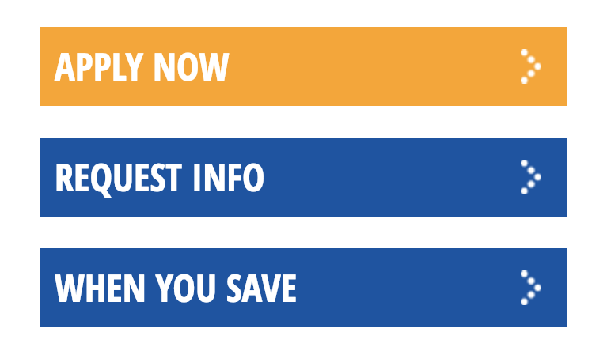

How to create Featured links
- Version: 1.0
- Created: 01/14/2019 klm
- Last Updated: 01/14/2019
- Intended Audience: UCOM
Summary
featured links are the orange and blue buttons on the site. 
Prerequisites
- access to subdomain
- link text
- link destination
- determination of orange or blue
Procedure
- log in to subdomain
- content > add content > Featured Content
- title, recomeneded FL - color - destination
- featured link > add new link
- link text, what the button should say
- link, page/destination to go to or use file link
- choose if open in new link if want
- click create link
- select button color
- click save
See Also
Keywords
- content